Ecuador es uno de los mayores exportadores de camarón del mundo. La clasificadora de camarón, la despieladora de pescado y los congeladores de Grandluck están hechos exactamente para ese tipo de planta — y Ecuclima ya conoce a esos clientes.
Congeladores espirales
Túneles de congelación
Congeladores de placas
Máquinas de hielo
Procesamiento de camarón y pescado
Sistemas de refrigeración
Quiénes son
Nantong Grandluck Freezcold Equipment Co., Ltd. se especializa en congelación rápida y soporte de refrigeración para el procesamiento de alimentos. Su equipo de ingenieros mecánicos, de refrigeración, eléctricos y de automatización tiene un promedio de 15 años de experiencia, respaldado por técnicos de producción e instalación y un equipo propio de gestión de pedidos y operación en obra.
Antes de cotizar, van a la planta del cliente: entienden a fondo el proceso de cada alimento y diseñan el equipo de congelación y refrigeración a la medida — cotización, pedido, entrega e instalación en sitio, con servicio posventa completo.
Ofrecen diseños no estándar para necesidades especiales de proceso, con la meta declarada de ser un fabricante de estándar internacional.
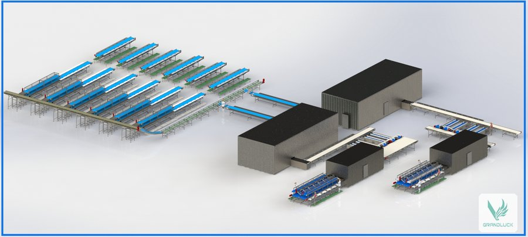
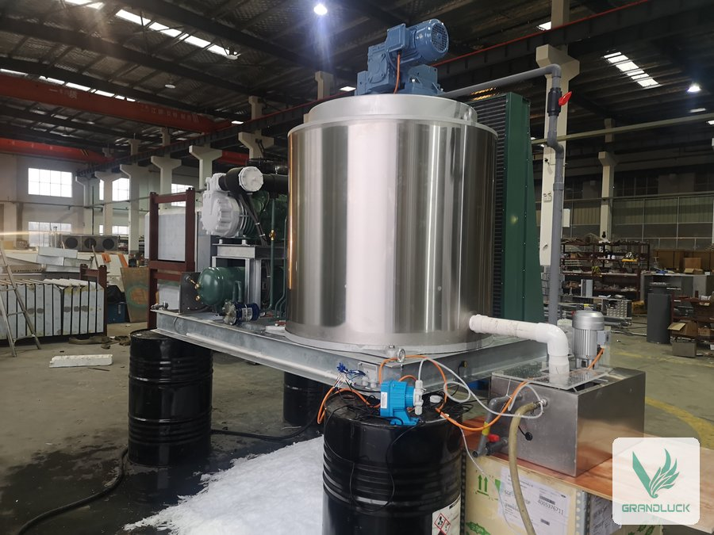
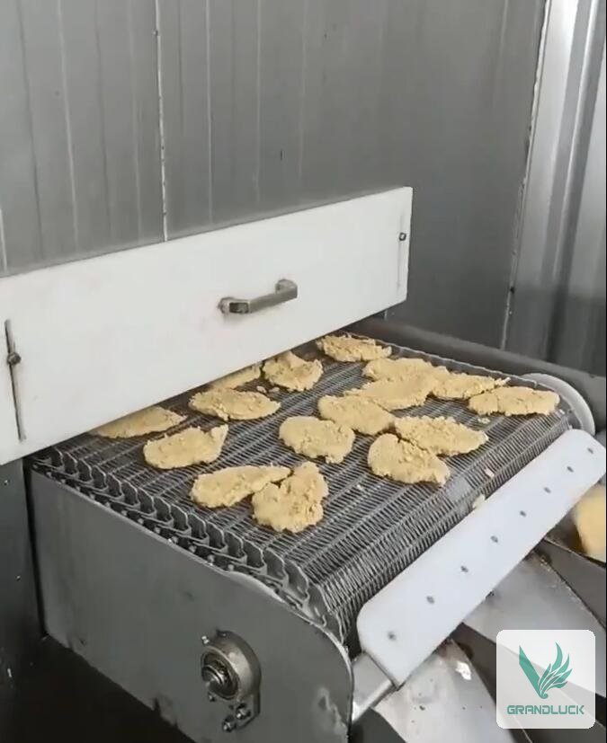
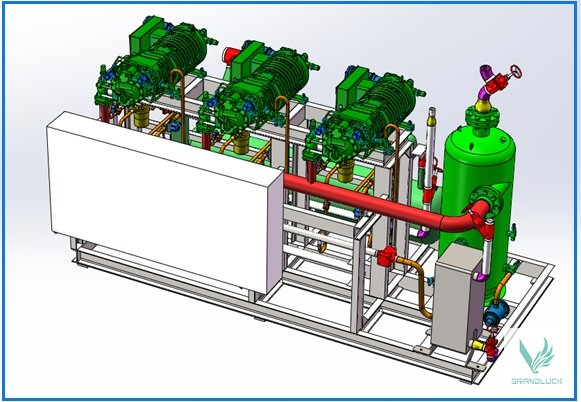
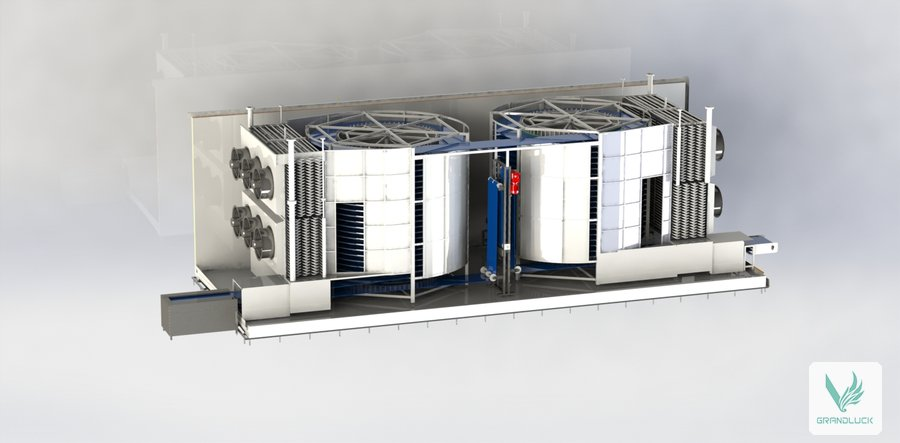
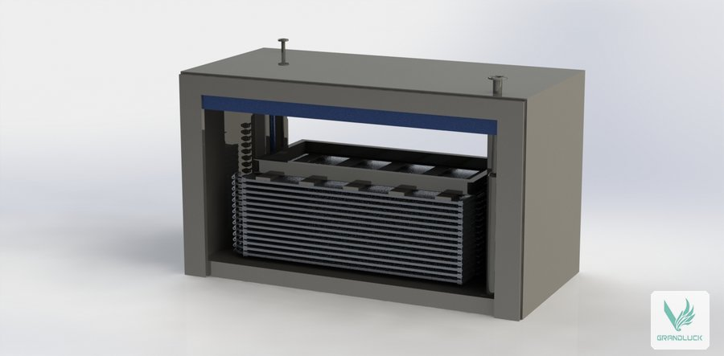
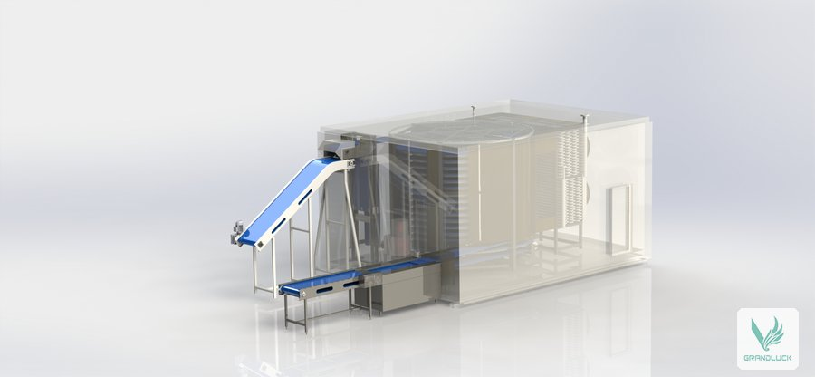
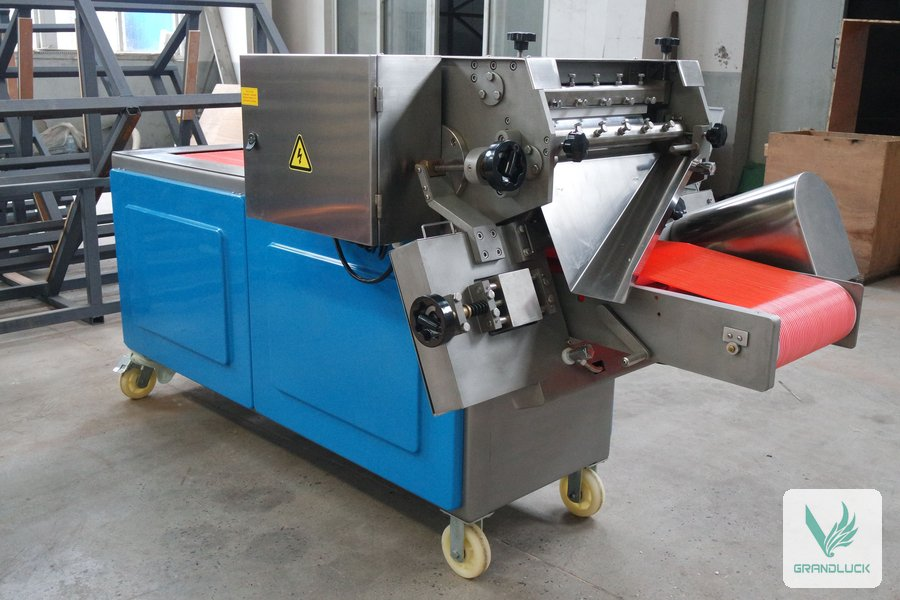
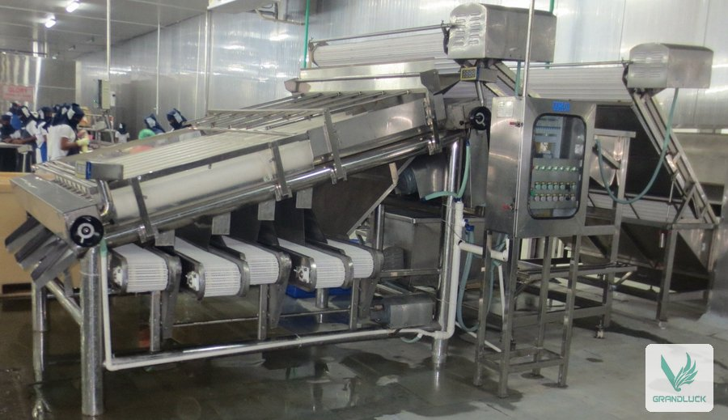
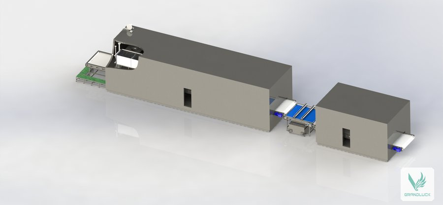
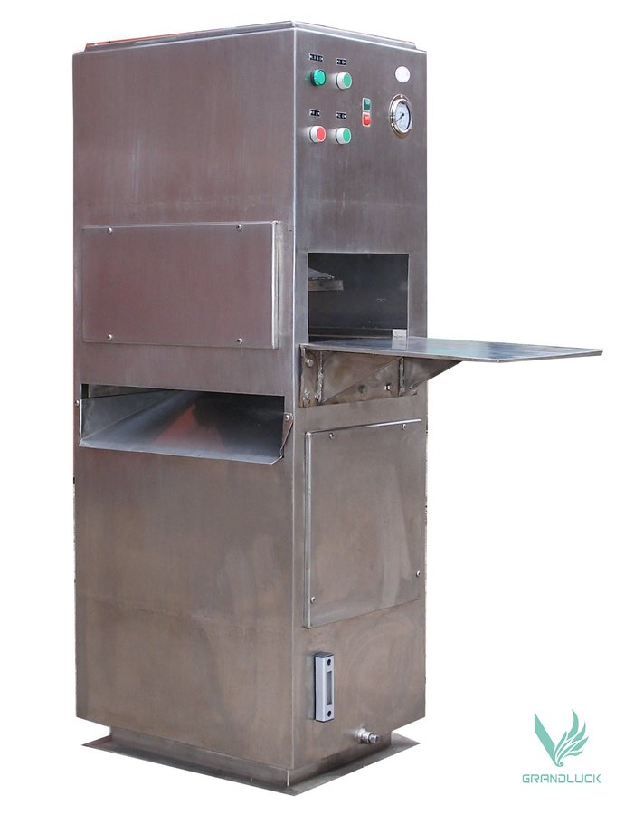
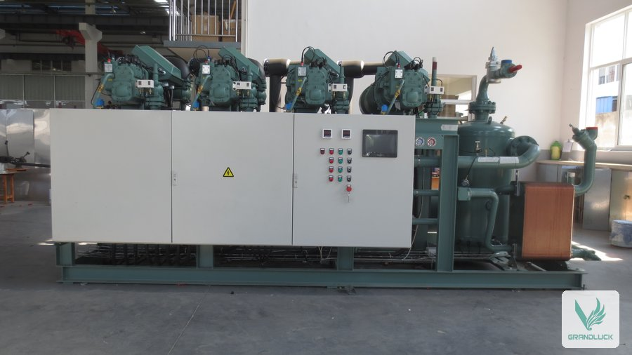
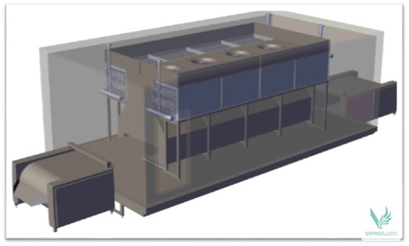
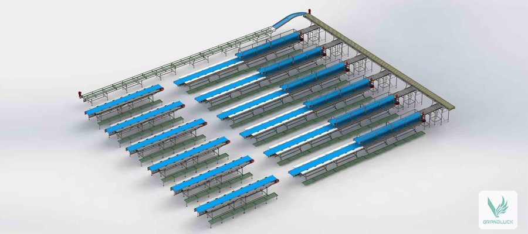
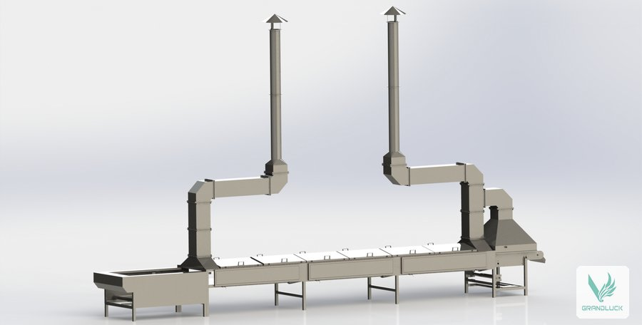
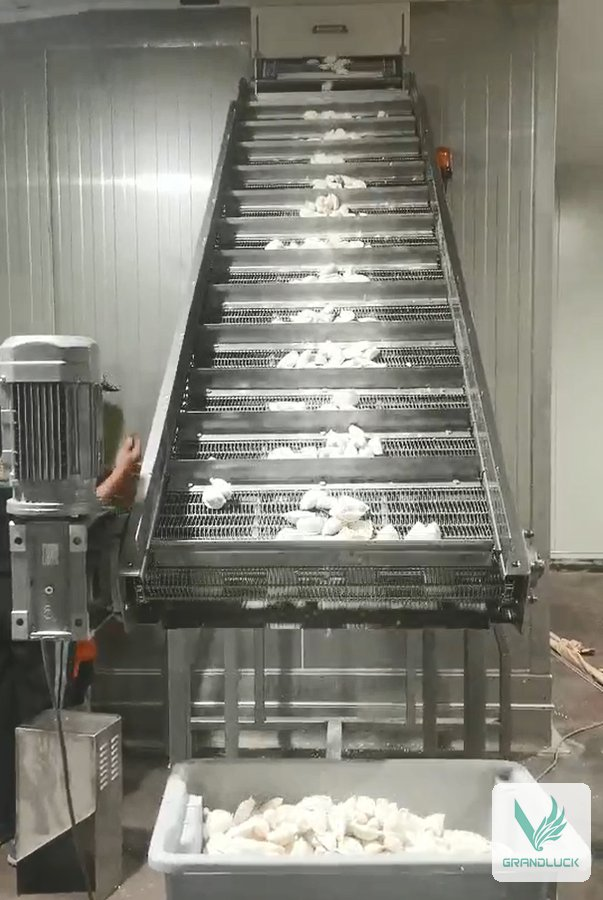